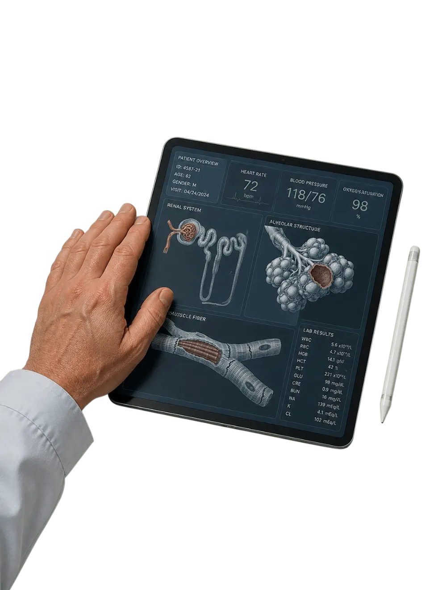

The electronic calculator
Mathematicians, no longer needed?
The worry: mathematical skills would become less important.
What happened: calculators reduced repetitive calculations and helped people focus on more complex problems.
AI in Healthcare & Emergency Response
Someone collapses on the street. They aren’t moving. There are no clear street signs, no obvious landmarks, and you don’t know the address. Every minute lost finding a victim directly impacts their survival.
Good morning, everyone.
Imagine you’re walking down the street, and suddenly you see someone collapse on the ground. They aren’t moving. You quickly pull out your phone and call emergency services for an ambulance. The operator answers and asks, “Where are you right now?”
You look around. There are no clear street signs, no obvious landmarks, and you have no idea what the exact address is. What do you do? Tell the operator, “Hold on, let me open Telegram and send you a location drop”? No, obviously that won’t work in a high-stress emergency.
Every single minute lost trying to figure out where a victim is directly impacts their survival.
02 — AI & Location Data
The caller doesn’t know the exact address.
The system works out where the call is coming from.
An exact position replaces long explanations.
Help heads straight to where it’s needed.
And this isn’t just about ambulances. It’s a massive transformation in how healthcare works.
But with modern Artificial Intelligence, we can fix this. AI tools can help process location data and send precise map coordinates to ambulance drivers, reducing the time spent explaining where help is needed.
And this isn’t just about ambulances. It’s about a massive transformation in how healthcare works.
Next, let’s look at the challenges doctors face.
→ Hand over to the next speaker
03 — The Core Crisis
Doctors aren’t struggling because they lack medical knowledge. They’re overwhelmed by paperwork and data.
Every minute spent typing is a minute they could spend listening to a patient.
Right now, healthcare is facing a huge issue: cognitive overload.
Doctors aren’t struggling because they lack medical knowledge. They’re overwhelmed by paperwork and data. They spend a large part of their workday staring at computer screens, typing notes, and completing administrative forms.
Every minute spent typing is a minute they could spend listening to a patient.
04 — Human Limits
When a radiologist reviews many complex scans during a long shift, mental fatigue can set in. Small signs of disease can be overlooked, because human eyes and brains need rest.
This creates a need for additional support.
When a radiologist has to review many complex scans during a long shift, mental fatigue can set in. Small signs of disease can be overlooked because human eyes and brains need rest.
This creates a need for additional support.
05 — The Solution
Notice that we say co-pilot, not autopilot. We aren’t replacing human judgment.
Understands the patient’s situation and makes the final decision.
An extra layer of support: organizes information and highlights areas that need attention.
This is where AI acts as a Clinical Co-Pilot.
Notice that we say Co-Pilot, not Autopilot. We aren’t replacing human judgment. The doctor remains responsible for understanding the patient’s situation and making the final decision.
AI provides an extra layer of support by organizing information and highlighting areas that need attention.
Next, let’s see how this works in practice.
→ Hand over to the next speaker
06 — In Practice
AI highlights suspicious areas on an uploaded scan for the doctor to review, and helps prioritize urgent cases.
AI turns the doctor–patient conversation into draft clinical notes. The doctor checks and approves them.
Less typing. More time to focus on patients.
Analysing…
Let’s look at two examples.
First, diagnostic assistance. When a medical scan is uploaded, AI can help highlight suspicious areas for a doctor to review. It can also help prioritize urgent cases.
Second, ambient scribing. AI can help turn a conversation between a doctor and a patient into draft clinical notes. The doctor then checks and approves them.
This can reduce typing time and give doctors more time to focus on their patients.
07 — A Lesson from History
Whenever new technology arrives, people worry about their jobs. History gives us some useful examples.
Automating routine tasks can give doctors more time for careful decisions and personal care.
The worry: mathematical skills would become less important.
What happened: calculators reduced repetitive calculations and helped people focus on more complex problems.
Now, a lot of people ask: “Will AI replace doctors and take over medicine completely?”
Whenever new technology arrives, people worry about their jobs. History gives us some useful examples.
When electronic calculators became available, people worried that mathematical skills would become less important. But calculators didn’t eliminate mathematicians. They reduced repetitive calculations and helped people focus on more complex problems.
The same idea applies to healthcare. Automating routine tasks can give doctors more time for careful decisions and personal care.
Next: another example and our conclusion.
→ Hand over to the next speaker
08 — More Examples
Artists continued to explore emotion, imagination, and different ways of seeing the world.

They changed many jobs and created new kinds of work.
Technology can change what people do and how they use their skills.
When photography became widespread, it changed the role of painting. Artists continued to explore emotion, imagination, and different ways of seeing the world.
Similarly, when computers entered offices, they changed many jobs and created new kinds of work.
These examples show that technology can change what people do and how they use their skills.
09 — The Human Line
AI cannot feel empathy. It cannot hold a patient’s hand or offer the human presence that matters when someone receives difficult news.
The goal of AI in medicine is to make more time for human care.
AI cannot feel empathy. It cannot hold a patient’s hand or offer the human presence that matters when someone receives difficult news.
The goal of AI in medicine is to make more time for human care.
Our core idea is simple: machine speed handles the data, and human empathy handles the care.
Doctors bring judgment, responsibility, and compassion. AI can support their work by helping them process information.
Conclusion
AI can reduce delays and support better care.
Every second counts. Technology can help us use those seconds more effectively, so people can focus on saving lives.
Whether it’s helping locate someone during an emergency call or helping a doctor review a scan, AI can reduce delays and support better care.
Every second counts. Technology can help us use those seconds more effectively, so people can focus on saving lives.
Thank you for listening. We’re happy to take your questions.